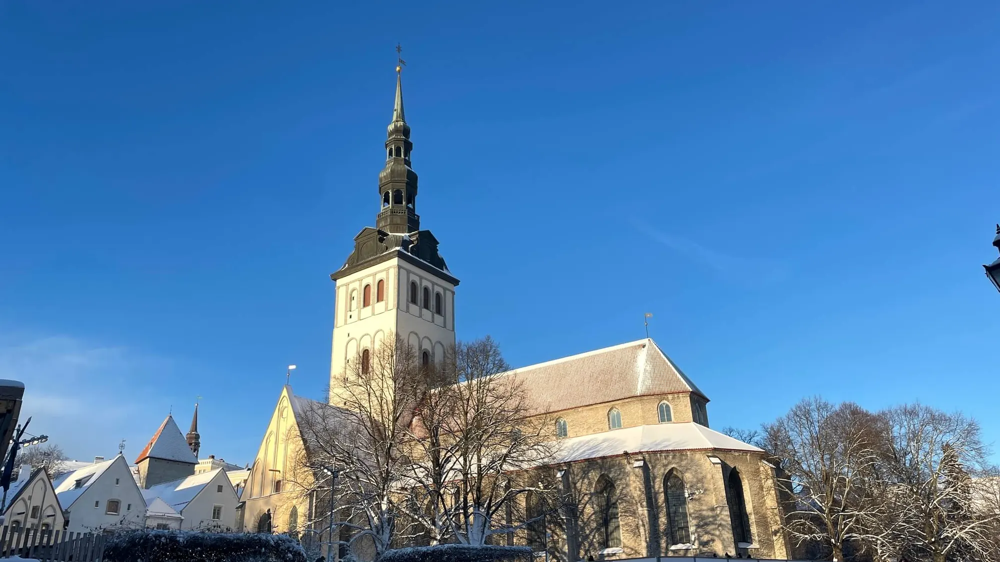
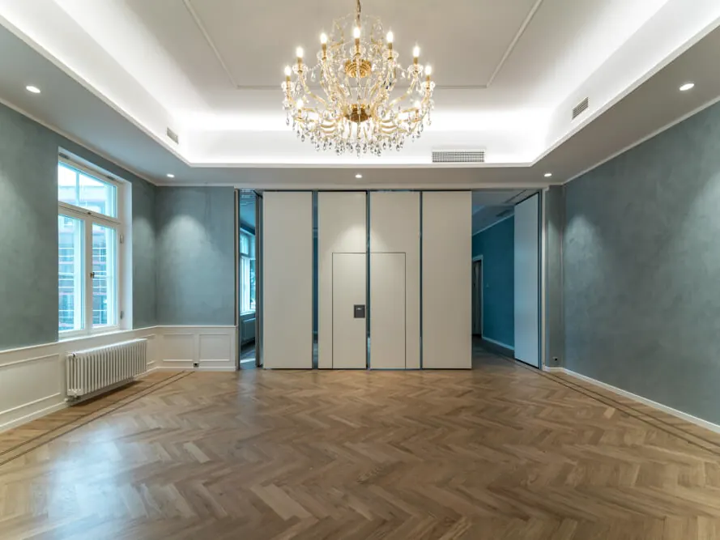
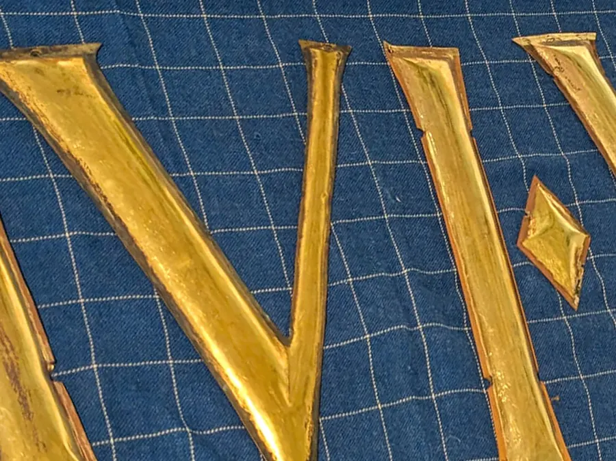
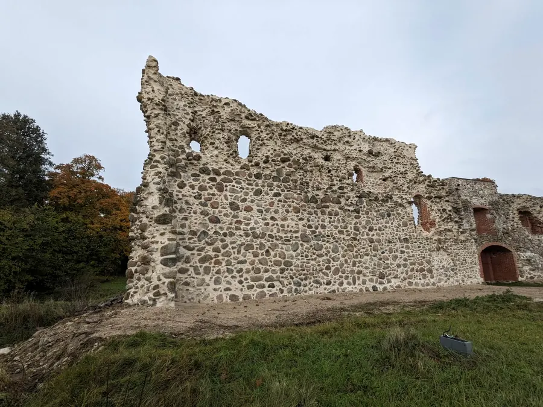
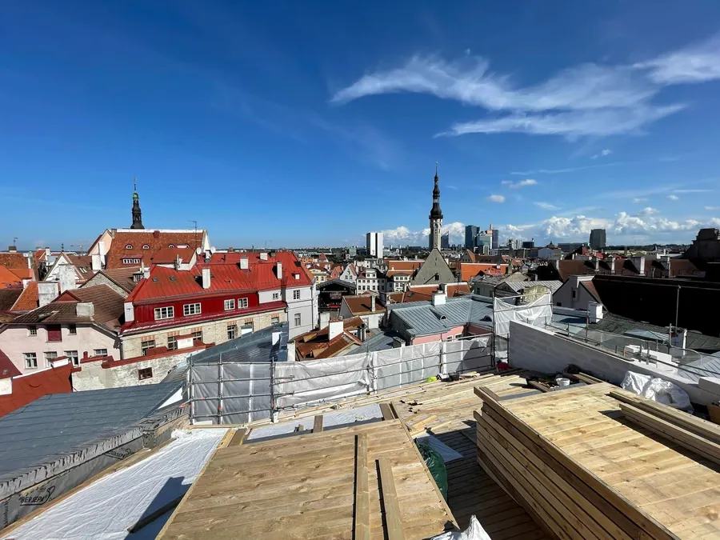
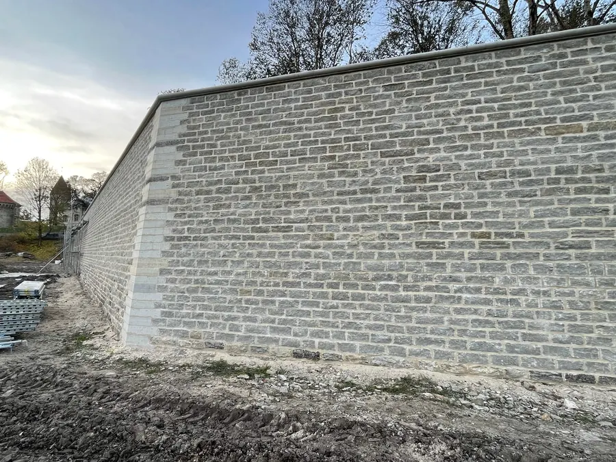
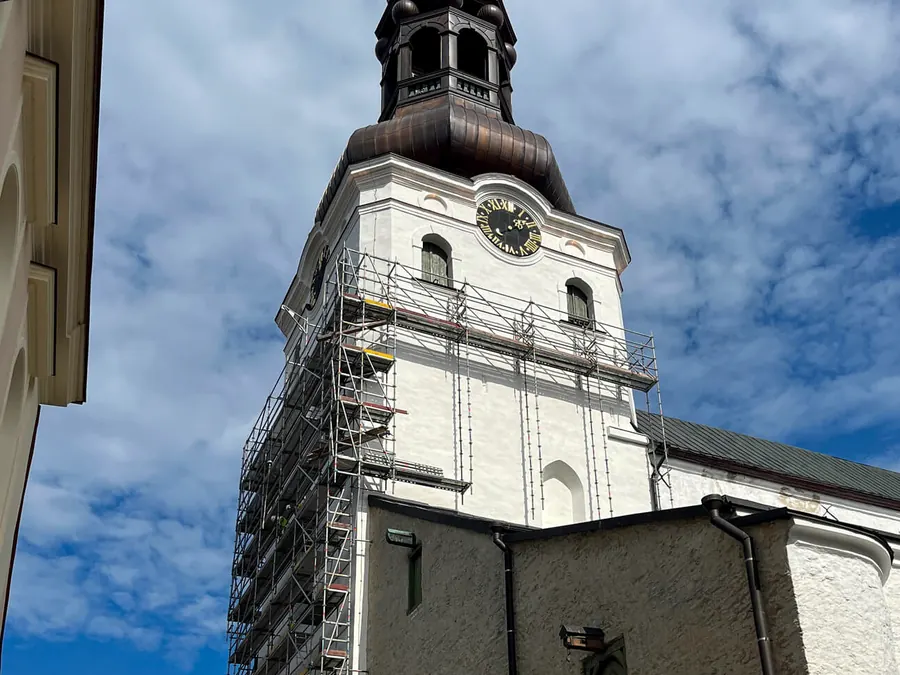
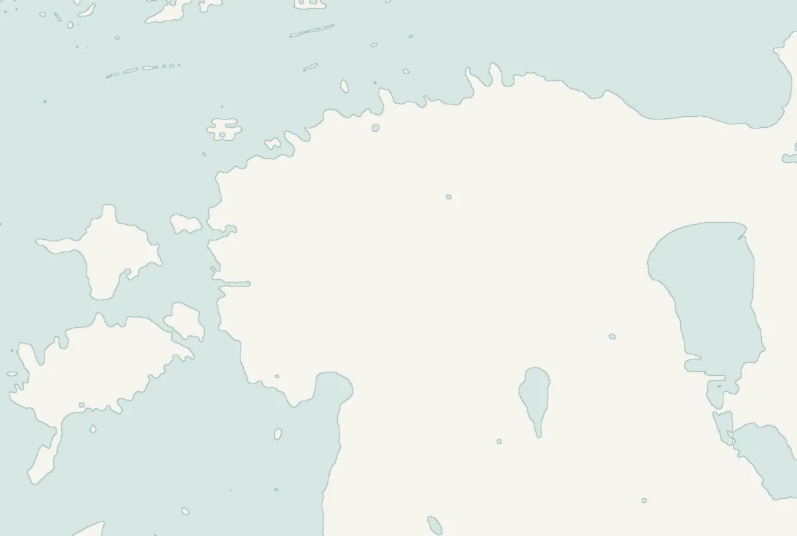

I
Tallinn, vanalinn
Niguliste kiriku torn ja väike kabel
- Tööaeg
- veebruar - september 2022
Keskaegne kirik Tallinna vanalinna südames. Tööd tehti tornis ja väikeses kabelis.

Muinsuskaitseameti tegevusluba nr E 604/2011
Pakume hoonete täisrekonstrueerimist ja muinsuskaitsetöid: katused, fassaadid, müüritööd, varemete konserveerimine ja ehitustööde juhtimine. Tallinna vanalinnast mõisate ja linnusteni.
Meie objekt: Niguliste kiriku torn ja väike kabel, 2022
Teenused
Iga teenuse juures on näited meie enda objektidest.
Vana hoone saab uue sisu, tehnosüsteemid ja viimistluse, väärtuslik välisilme ja detailid jäävad alles.
Näiteks: Narva mnt 108, Marsi 6, Suur-Patarei 20

Töötame Muinsuskaitseameti tegevusloaga nr E 604/2011. Kirikud, mõisad ja vanalinna hooned.
Näiteks: Niguliste kirik, Toomkiriku torn, Kiriku plats 1

Linnuste, kloostrite ja mõisate varemete müüride kindlustamine ja konserveerimine.
Näiteks: Laiuse linnus, Padise klooster, Meremõisa

Ajalooliste hoonete ja kortermajade katuse- ja fassaaditööd, sarikatest plekini.
Näiteks: Põltsamaa loss, Rataskaevu 5, Olustvere mõis, Madli 1

Paekivimüürid, ajaloolised krohvid ja viimistlus.
Näiteks: Skoone bastion, Kiriku plats 1

Juhime ehitustöid ja teeme ehitise auditit (MTR registreering EEK001205).
Näiteks: Toomkiriku tornifassaad, Viru 3

Objektid
Fotod on meie objektidelt. Klõpsake fotol, et seda suuremalt näha.
I
Tallinn, vanalinn
Keskaegne kirik Tallinna vanalinna südames. Tööd tehti tornis ja väikeses kabelis.
II
Põltsamaa, Jõgevamaa
Lossikompleksi rekonstrueerimine ja seejärel katuse ehitustööd, kaks järjestikust etappi.
III
Narva mnt 108, Tallinn
Suvitusvilla rekonstrueeriti Hiina Rahvavabariigi saatkonna residentsiks.
Sagadi mõis2021
Kadrioru loss2023
Olustvere mõis2020
Lai 14, Tallinn2020-2021
Referentsid
Kõik 35 objekti meie referentside lehelt, uuemad eespool.

© OpenStreetMap
Kvalifikatsioon
Muinsuskaitse all olevatel hoonetel juhivad töid spetsialistid, kellel on Muinsuskaitseameti tegevusluba.
Juhatuse liige
Muinsuskaitse tegevusluba VS 856/2016
Projektijuht
Muinsuskaitse tegevusluba VS1016/2019
Projektijuht
Muinsuskaitse tegevusluba VS 149/2004
Diplomeeritud ehitusinsener, tase 7
Kuidas töö käib
Kontakt
Kirjeldage hoonet ja töid, vastame peagi ja leiame lahenduse.
Tammsaare Ärikeskus
A. H. Tammsaare tee 47, 11316 Tallinn